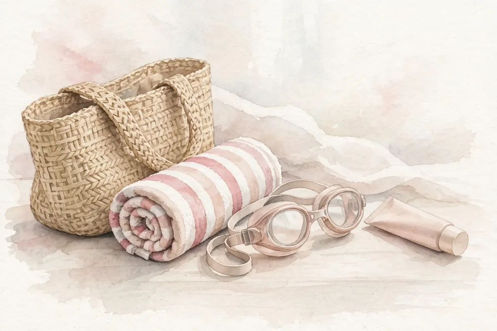
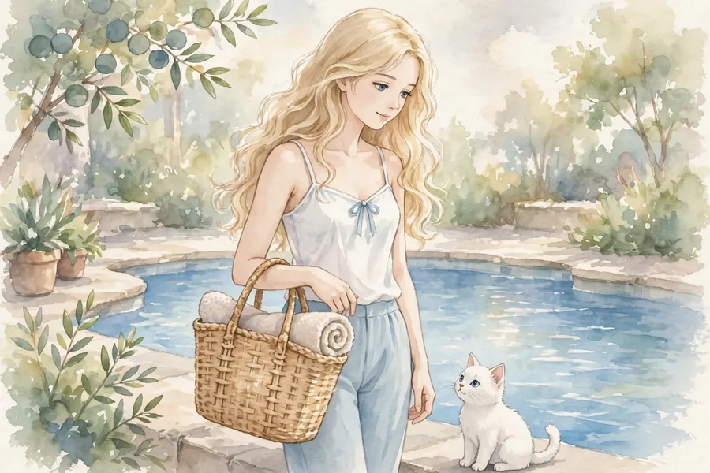

トップ ＞ ボディケア ＞ プール・海の日の体のケアと、持ち物の段取り
プール・海の日の体のケアと、持ち物の段取り

プールや海へ行く日は、体のケアの段取りがいつもと少し違います。施術の現場でも、夏場は日差しや水のあとの肌のつっぱり感について聞かれることがあります。この記事では、プール・海の日の前・当日・帰ったあとの体のケアと、持ち物の段取りを整理します。
出かける前の準備
出かける前に決めておきたいのは、日焼け止めの段取りです。塗るタイプとスプレータイプ、どちらを持っていくか、塗り直しのタイミングをどうするか。家を出る前に一度塗っておき、現地で汗をかいたあとや水から上がったあとに塗り直す、という流れにしておくと、段取りがぶれません。塗り直し用の分は、別に1本持ち歩くのが基本です。
持ち物は、前日のうちにリストを作っておくのが無理のないやり方です。タオル、着替え、ビニール袋、ボディシート、水分補給用の飲み物、帽子、サンダル。濡れたものを入れる袋は、防水のものを1枚用意しておくと、帰りの荷物がまとめやすくなります。貴重品を入れる防水ケースも、あると安心です。日差しの強い日は、ラッシュガードや羽織るものを1枚入れておきましょう。
水分補給の準備も、出かける前の段取りのうちです。水やお茶を入れた水筒を持っていく、現地で買える場所を確認しておく、といった準備があります。のどが渇く前に、こまめに飲む、というリズムを決めておくと、忘れにくくなります。小さなお子さんと一緒の場合は、子どもの分の飲み物と着替えも、別に分けて用意しておきましょう。
当日の体のケア
泳いだあとは、まず真水で体を洗い流します。プールの塩素や海の塩分が肌に残ったままにしておくと、肌のつっぱり感の原因になることがあります。シャワーのある施設では、泳いだあとに軽く流してから、タオルで水気を取ります。シャワーがない場所では、持参した水で流すか、ボディシートで拭き取る、という段取りにします。
日差しのあとの体のケアも、当日のうちにしておきたい点です。日差しを浴びたあとは、体を冷ます時間を取ります。日陰で休憩する、冷たいタオルを当てる、といった方法があります。足元のケアも忘れずに。サンダルで歩いたあとは、足の裏や指の間を洗い、乾かしてから靴下や靴を履きます。砂が残ったまま靴を履くと、肌がこすれてしまうことがあります。
休憩と水分補給は、こまめに取るのが基本です。泳ぐ合間に日陰で休み、水分を取る、というリズムを決めておきます。疲れを感じたら、無理に泳ぎ続けずに休む、という判断も大切です。お子さんと一緒の場合は、子どもの様子を見ながら、休憩のタイミングを決めてください。
帰ったあとのケアと持ち物の片づけ
帰宅したら、まずシャワーで体を洗い流します。塩素や塩分、日焼け止めを落としてから、ボディクリームやボディローションで保湿する、という流れが基本です。保湿は、体がまだ少し湿っているうちに塗ると、伸ばしやすくなります。日差しを浴びた日は、肌をこすらずに、やさしく塗るようにします。
濡れた水着やタオルは、帰宅したらすぐに洗濯機へ入れるか、干しておきます。濡れたままバッグに入れっぱなしにしておくと、においの原因になることがあります。使った日焼け止めの残量も確認しておきましょう。残りが少なければ、次に使う日までに買い足す、という段取りにします。
肌の赤みやかゆみが続く場合は、無理にケアを続けず、皮膚科などの専門家に相談してください。疲れが残る場合は、無理をせずに休むのが基本です。プールや海の日は、帰ってからのシャワーと保湿までがセットです。前日のリスト作りから、帰宅後の片づけまでを一連の段取りとして考えると、忘れ物も減ります。この記事はプール・海の日の体のケアの案内であり、施設ごとのルールがある場合は、そちらが優先です。

セラフィナ「プールや海の日は、帰ってからのシャワーと保湿までがセットだよ。持ち物リストを作っておくと安心だね」

セラフィナ｜美容の道具箱の案内役
「量と表示が分かれば、美容は失敗しない。」——セラフィナと白猫のモコが、買う前のチェックポイントを案内します。綺麗になりたい気持ちに正直に、でも表示は冷静に読むのが、このサイトの約束です。